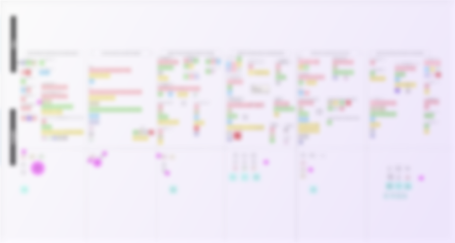
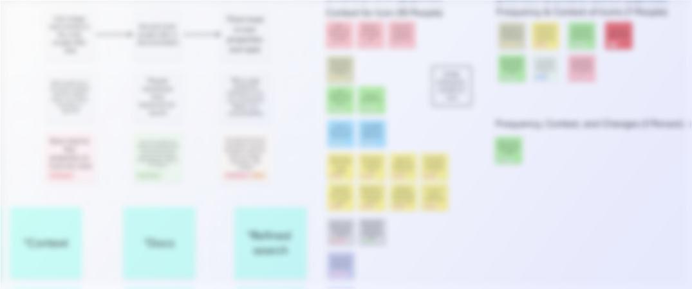
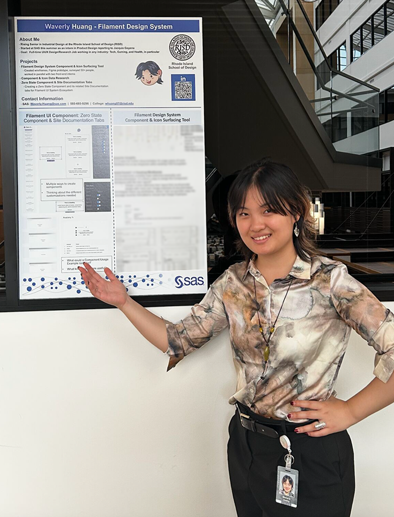
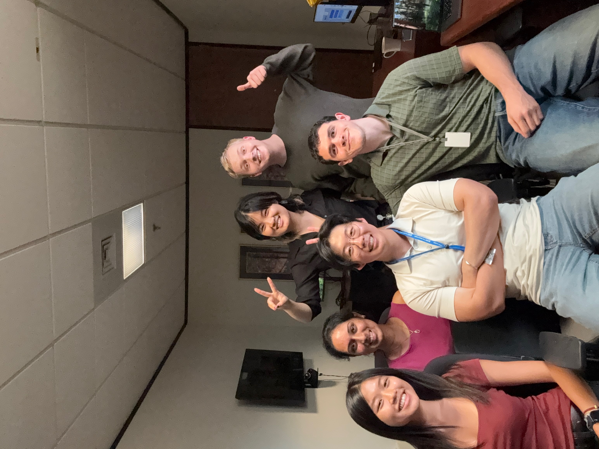
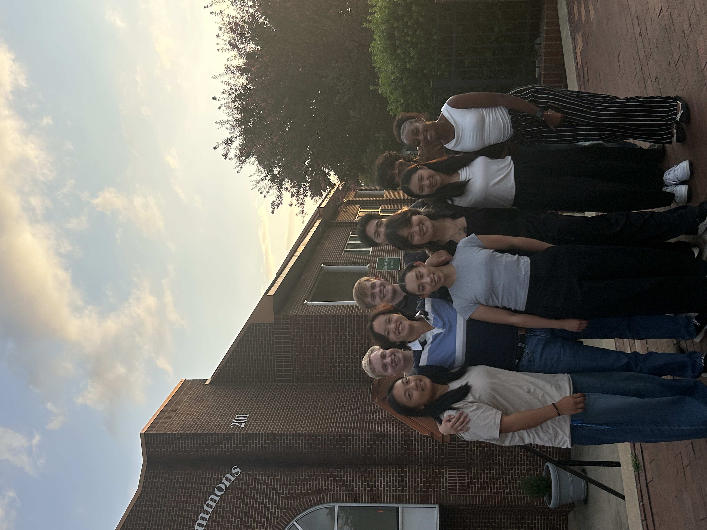
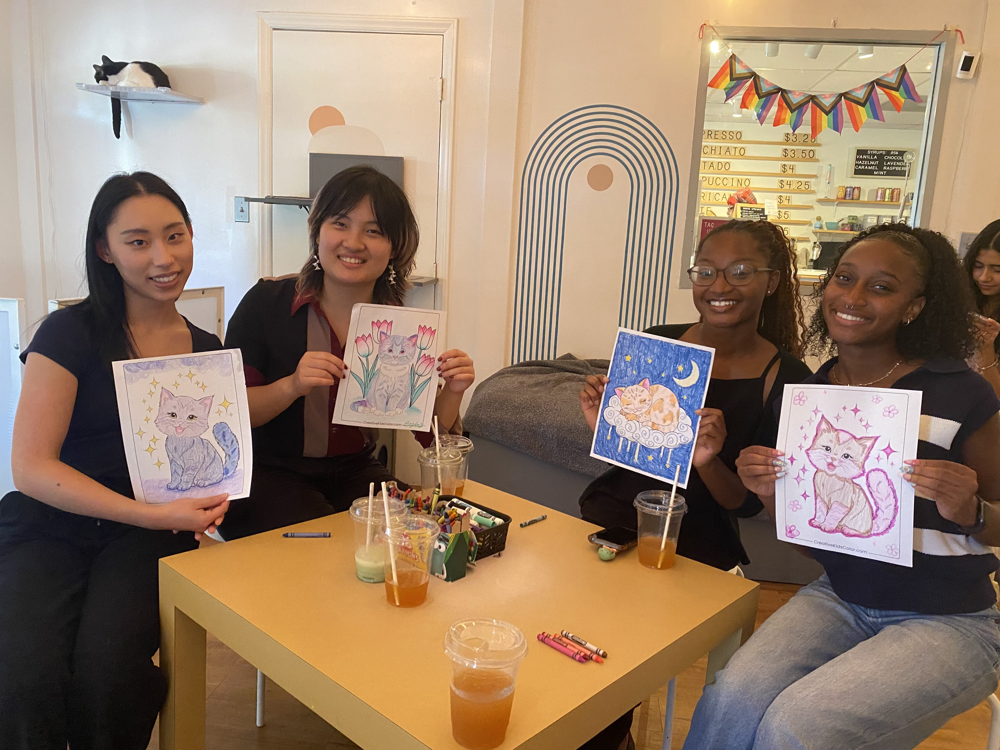
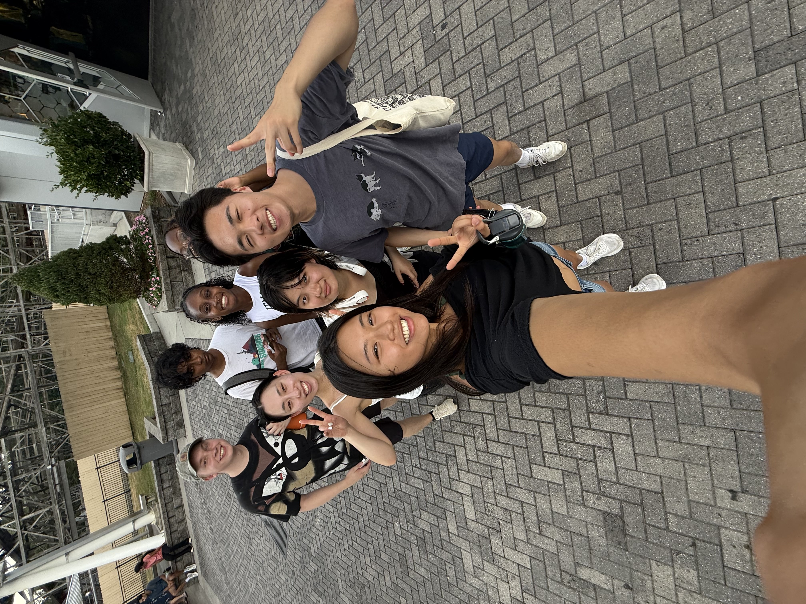
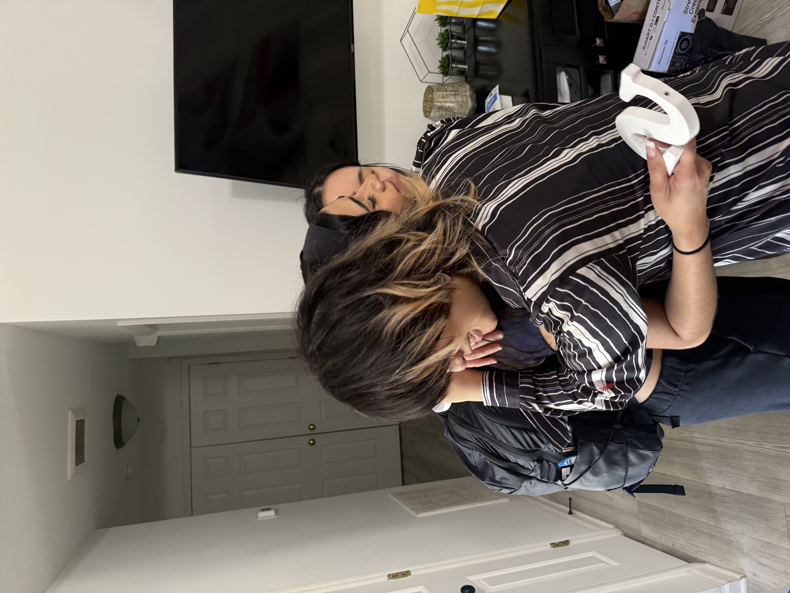
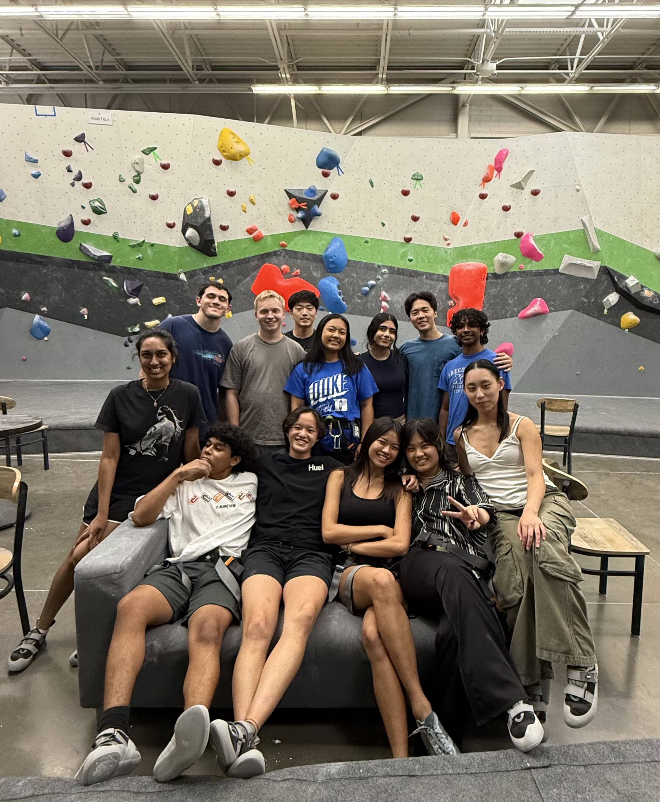
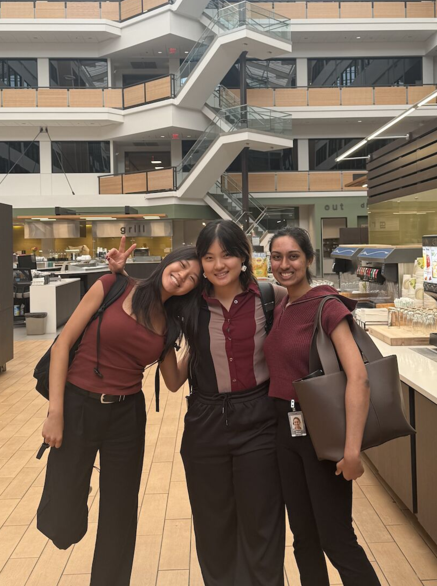

Filament Website Redesign Concepts
A summer-long internship project at SAS Institute contributing to a comprehensive series of redesign concepts for the Filament Design System (FDS) website, including component research, icon data surfacing, and UX design work.
Four areas of contribution
This was a broad redesign concept initiative spanning the FDS website — from how components are documented, to how icon and component usage data is surfaced for the teams that rely on it daily.
My work touched all four workstreams, with a particular focus on research, component design, and designing data-surfacing tools that could serve engineers, designers, and test engineers across SAS.
Understanding Components — building the Zero State component and its full variant set
Zero State Component & Documentation Tabs — creating the docs that designers and developers actually use
Filament Icon & Component Data Surfacing Tool Research — surveying 50+ FDS members to understand what data they need
Filament Icon & Component Data Surfacing Design — translating research insights into wireframes and prototypes
Turning survey data into design decisions
The core research question: without an internal tool to surface icon and component usage data, how does that gap affect the people who work with FDS every day? Through a 50+ person survey with carefully considered data synthesis, key patterns emerged across all personas — context, documentation, and refined search were the top unmet needs.


48% of survey respondents said icon context data was the most-wanted information — with no existing tool to surface it
Designed a tab-based layout merging icon documentation with usage examples, keeping everything in one accessible place
68% of respondents said they struggle finding the right icon; 61% found searching for component information the most time-consuming task
Proposed refined search with more keyword support and filter options, reducing time spent hunting for the right component or icon
Multiple personas — developers, test engineers, UX designers — all flagged unclear or incomplete documentation as a core frustration
Wireframed a component overview page surfacing total usage, product deployment links, and usage context in a scannable grid format
Teams couldn't easily tell if a component change would break something downstream — because there was no view of where components were actually used
Designed a per-component view showing total uses, products, repositories, and last-updated date — making impact analysis fast and clear
Presenting the work

SAS Internship Expo 2025
Presenting four months of research, component work, and data-surfacing design to stakeholders across SAS Institute.
The full project arc — from the Zero State component and documentation tabs, through survey research synthesis and icon data surfacing wireframes
100+ people! Designers, developers, and product stakeholders across the Filament Design System and broader SAS design organization
The people who made it
A summer full of feedback, late Figma sessions, and people who made every project sharper. Thanks to this year's intern cohort, as I've made lifelong friends! Huge thank you to my manager, Jacquie Goyena for all of her support throughout the process!







Extra shout out to:
Takeaway
This internship showed me what it means to design inside a living system — where every decision ripples outward to the developers, engineers, and designers who build with it. From learning there's no single "right" way to structure a component, to writing documentation where every word earns its place, to sitting in on research synthesis with a team of brilliant people: I left a much sharper designer than I arrived. Thank you to everyone at SAS who made it such a genuinely great summer.